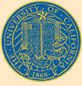

TRANSFER INFORMATION TempIST (temporary ASSIST-like site w/ artic changes since 16-17) General Transfer Information Transfer Pathways Information Transfer Pathways by Major Transfer Pathways Guide Quick Reference for Counselors (includes Transfer Matrix) Transfer Credit Information Transfer Admission Guarantee (TAG) Information for all Campuses Transfer Admission Planner (TAP) UC Information Center (Transfer Data) Angela's TAG PowerPoint |
(also includes all CSUs, Independents, and Community Colleges) |
|
CREDIT BY EXAM INFO Advanced Placement (AP) Info AP Exams for Admission and IGETC AP Exams & IGETC (check Table of Contents for location) International Baccalaureate (IB) Info |
|
|
|
Application
Center (including online application and enrollment info) |
Please send comments, questions, and/or corrections to spantell@peralta.edu